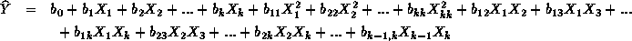
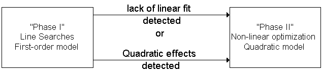

The optimizing
of a single response usually starts with line searches in the direction
of maximum improvement. if there is lack of fit for linear models, quadratic
models are next tried
"Flowchart" for two phases of experimental optimization
|
The experimental optimization
of a single response is usually conducted in two phases or steps, following
the advise of Box and Wilson. The first phase consists of a sequence of
line searches in the direction of maximum improvement. Each search in the
sequence is continued until there is evidence that the direction chosen
does not result in further improvements. The sequence of line searches
is performed as long as there is no evidence of lack of fit for a simple
first order model of the form

The second phase is performed when there is lack of linear fit in Phase
I, and instead, a second order or quadratic polynomial regression model
of the form

exhibits adequate fit. Not all responses will exhibit quadratic fit,
and in such case Phase I is stopped when the response of interest can not
be improved any further. Each phase is explained and illustrated in the
next few sections.

FIGURE 5.1: The Two Phases of Experimental Optimization
|